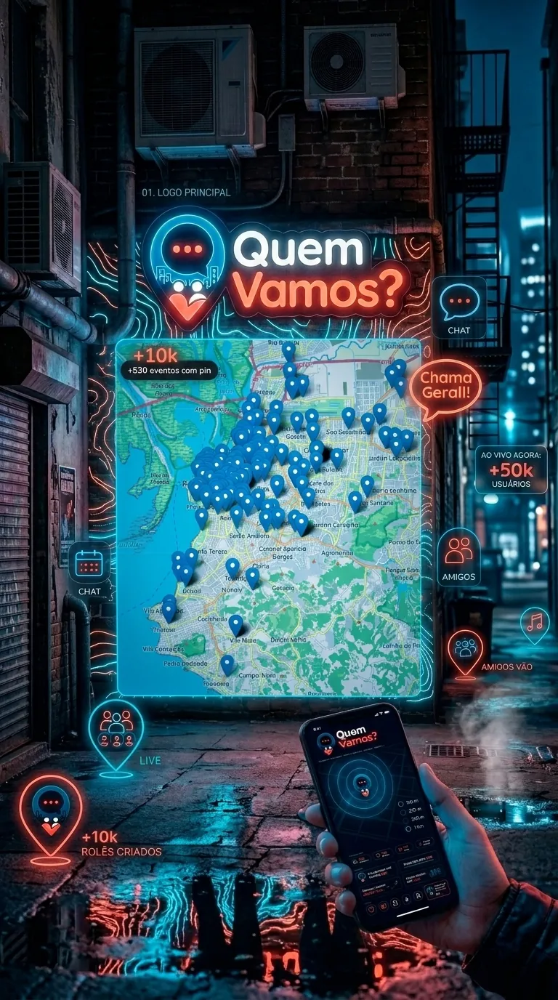
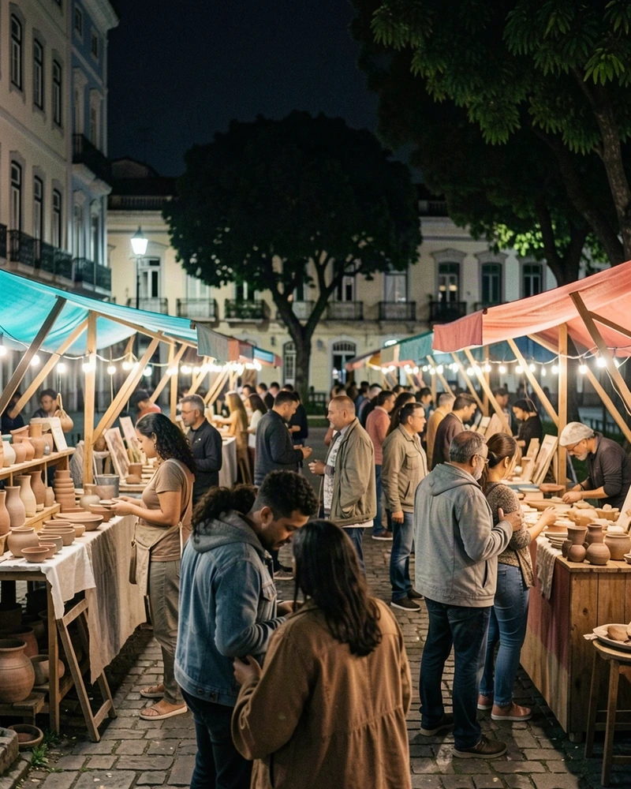
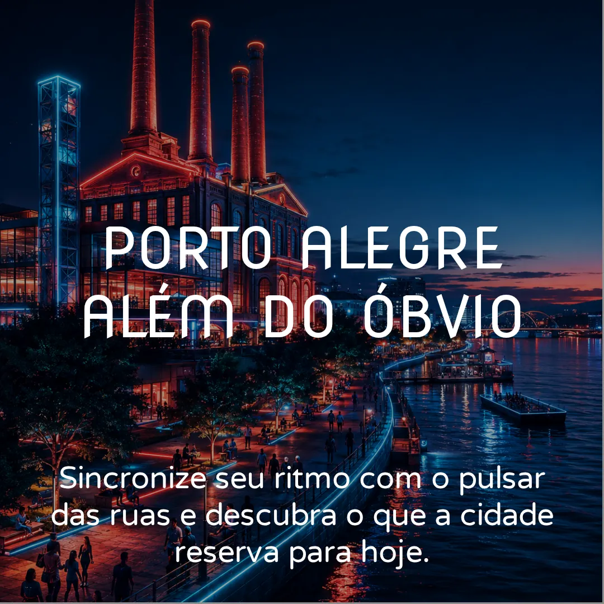
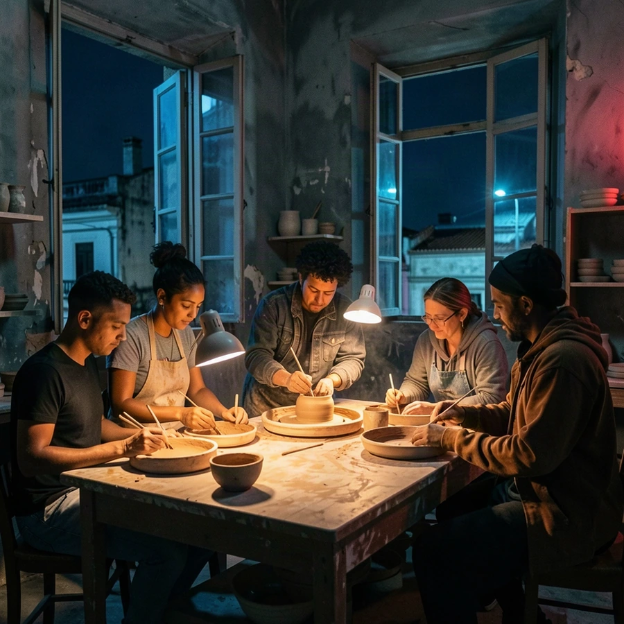
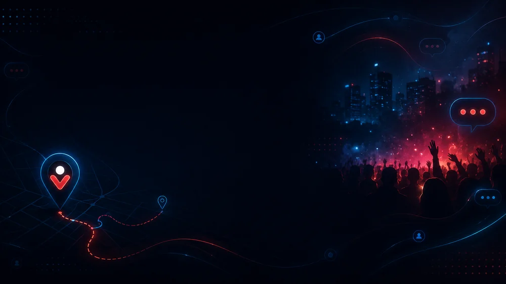
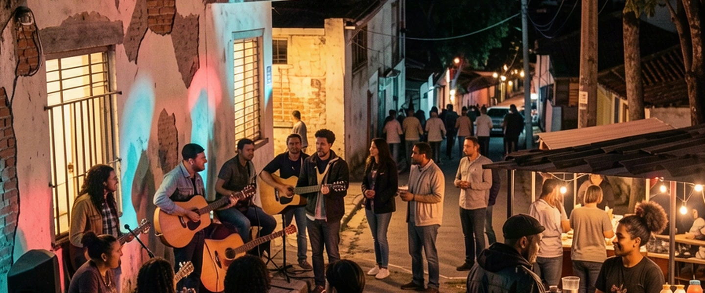
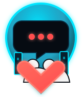

Ilustração do app
Evento ilustrativo
Exemplo visual · não é evento real
Menos feed perdido. Mais cidade acontecendo.
Shows, feiras, exposições, teatro e encontros culturais. Explore a agenda e o mapa para transformar vontade de sair em plano.
Acesse pelo navegador. Eventos cadastrados passam por revisão.
Exemplo visual · não é evento real
Ilustração conceitual da landing existente. Não é captura do app atual nem evento real.
O problema
Um cartaz na calçada. Um story que sumiu. A indicação que morreu no grupo. Tem cultura acontecendo, mas descobrir o que combina com o teu dia ainda dá trabalho demais.
A proposta é simples: organizar opções em uma agenda cultural, com lugar, data e contexto para ajudar a decidir.



O app
Veja a cidade respirando. Pins mostram onde tem coisa acontecendo agora, perto de você ou no caminho.
Veja o que acontece hoje, amanhã, no fim de semana ou quando bater aquela vontade perigosa de sair de casa.
Guarda o que interessa e decide depois. Porque nem toda decisão precisa ser tomada no pânico do grupo.
Marca presença, vê quem vai e chama junto. O rolê começa antes da porta.
Comentários, avaliações e contexto para entender melhor antes de ir.
Produtores, casas e coletivos podem cadastrar eventos para revisão.
Mapa vivo
Pins, filtros, rotas e estados ajudam a entender o que está acontecendo perto, ao vivo, salvo ou em destaque.
Feiras & rua · Hoje. Demonstração ilustrativa, sem consulta à programação real.
Sem complicação
Três passos. Nada de rodar a internet inteira atrás de um cartaz perdido.
Começa pela programação cultural de Porto Alegre e vê as opções disponíveis.
Escolhe o período, o tipo de evento e usa o mapa para entender onde acontece.
Consulta os detalhes e guarda o que chamou atenção para organizar o próximo plano.
Produtores e lugares
Bares, teatros, galerias, festas, coletivos, feiras e produtores podem cadastrar eventos e ajudar a cidade a se enxergar melhor.
A ideia é simples: mais visibilidade real, menos gritaria perdida no feed.
Tenho um eventoEventos passam por revisão para manter a base útil, segura e organizada.

Nosso manifesto
O direito de participar começa com o direito de saber.
Encontre o próximo encontro
Um show num bar pequeno. Uma feira na praça. Uma oficina de bairro. A cultura já está acontecendo — mas, muitas vezes, as pessoas não ficam sabendo.
Chamamos essa distância de rolê invisível. O Quem Vamos? nasce para aproximar quem cria, quem organiza e quem quer participar, sem fingir que conhece a cidade inteira.
Não queremos decidir o que a cidade deve viver. Queremos ajudar a cidade a descobrir o que já vive.
Síntese do Manifesto Público v1 · proposta editorial em revisão. Esta página não formaliza políticas econômicas, compromissos jurídicos ou certificação de acessibilidade.
Princípios em construção
Uma visão para orientar o projeto. As propostas abaixo ainda dependem de aprovação e de verificação dos fluxos do produto.
Propomos divulgação básica gratuita, inclusive para eventos comerciais. Isso não significa ingresso gratuito nem aprovação automática.
A proposta é não vender prioridade editorial nem condicionar a divulgação à contratação de serviços.
Defendemos informação clara, critérios compreensíveis e distinção entre recomendação, parceria e publicidade.
Queremos coleta proporcional a cada funcionalidade, sem transformar dados pessoais em moeda de troca.
Pluralidade e acessibilidade são objetivos contínuos. Informação desconhecida não deve ser apresentada como garantia.
Origem
O Quem Vamos? parte de uma relação real com a cena cultural e noturna de Porto Alegre.
O projeto tem apoio inicial do Dirty Old Man, mas não nasce para ser vitrine de uma casa só. A proposta é servir a cidade, seus lugares, produtores, artistas e públicos.

Sem letras miúdas
Boa agenda começa com informação clara. O resto é propaganda.
É uma agenda cultural voltada a descobrir eventos em Porto Alegre, com consulta por lista, mapa, filtros e informações de cada evento.
Não. Você pode abrir a agenda diretamente no navegador.
Entre na agenda e use os filtros de período e tipo de evento, ou explore a visualização em mapa. As opções dependem da programação publicada.
O aplicativo possui fluxo de cadastro de eventos, sujeito às regras de acesso e revisão antes da publicação. Use “Tenho um evento” para consultar as opções no app.
O foco é descobrir e consultar eventos, não operar uma bilheteria. Confira informações de ingresso e acesso com a organização responsável.
Programações podem ser alteradas ou canceladas. Confira os detalhes atualizados e, quando necessário, os canais do organizador antes de sair.

Explore o app
Abra a agenda, explore o mapa e encontre o próximo evento em Porto Alegre.
Menos feed perdido.
Mais cidade acontecendo.